Vi har 4 komplette FoM-målinger fordelt på 4 serier. Første komplette punkt i hver serie er baseline. Bare punkter med samme målegrunnlag kobles sammen.
Les oversikten i GitHub / Markdown
Høyere er bedre. Funksjonstester teller 50 %, benchmarkytelse 30 % og brukeropplevelse 20 %. En komplett måling kan fortsatt ha feil.
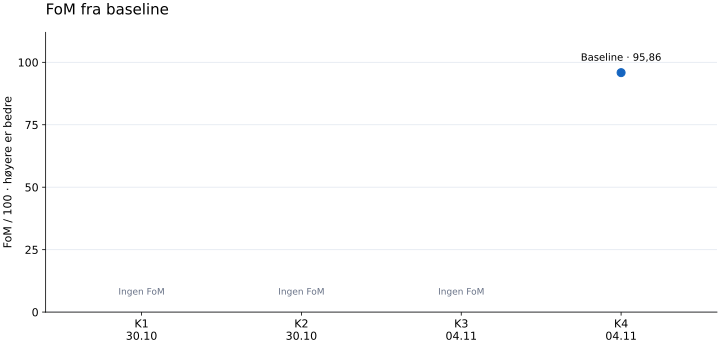
| Kjøring | FoM / 100 | Funksjon / 100 | Ytelse / 100 | Brukerskår / 10 | Forklaring |
|---|---|---|---|---|---|
| K1 · 2026-10-30 13:41 UTC | — | Ufullstendig | Ufullstendig | — | Ufullstendig kjøring |
| K2 · 2026-10-30 13:45 UTC | — | Ufullstendig | Ufullstendig | 5,0 | Ufullstendig kjøring |
| K3 · 2026-11-04 08:39 UTC | — | Ufullstendig | Ufullstendig | — | Måleverktøyets egenkontroll feilet / mangler |
| K4 · 2026-11-04 08:40 UTC | 95,86 | 99,73 | 100,00 | 8,0 | Komplett måling · Baseline for serien · 1 testgruppe med feil |
| K5 · 2026-11-04 19:00 UTC | 97,86 | 99,73 | 100,00 | 9,0 | Komplett måling · Baseline for serien · 1 testgruppe med feil |
| K6 · 2026-11-05 11:39 UTC | 98,00 | 100,00 | 100,00 | 9,0 | Komplett måling · Baseline for serien |
| K7 · 2026-11-05 19:28 UTC | 100,00 | 100,00 | 100,00 | 10,0 | Komplett måling · Baseline for serien |
Ufullstendig betyr at nødvendige målinger mangler. Det betyr ikke null poeng. Første komplette punkt i hver serie er baseline; det endrer ingen lagrede resultater.
Det finnes også en eldre teknisk baseline fra 2026-10-30: teknisk skår 100,00/100, FoM —. Den mangler brukerskår. Dette er et arkivert sammendrag fra en annen maskin (AMD Ryzen 7 7435HS), ikke en ny kjøring. Den kobles ikke til punktene ovenfor.
Første registrerte enhetstestmåling: 169/169. Siste: 223/223. Antall tester har endret seg med +54. Siste måling har 0 feil og 0 utelatte tester. Den arkiverte tekniske baselinen hadde også 169/169 enhetstester bestått.
Her teller vi enhetstestene for webapp, inputbibliotek og backend. Tallene er bestått / antall tester. Firmware, integrasjon, nettleserforløp og måleverktøyets egenkontroll vises separat i detaljrapportene. Flere tester viser et større testsett, ikke automatisk bedre kode eller høyere testdekning.
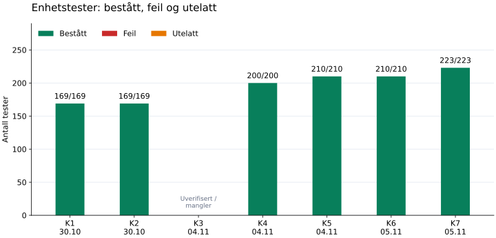
| Kjøring | Webapp og spill | Inputbibliotek | Backend | Totalt bestått / antall | Feil | Utelatt | Datagrunnlag |
|---|---|---|---|---|---|---|---|
| K1 · 2026-10-30 13:41 UTC | 58/58 | 39/39 | 72/72 | 169/169 | 0 | 0 | Gjennomført; samlet kjøring ufullstendig |
| K2 · 2026-10-30 13:45 UTC | 58/58 | 39/39 | 72/72 | 169/169 | 0 | 0 | Gjennomført; samlet kjøring ufullstendig |
| K3 · 2026-11-04 08:39 UTC | 89/89 | 39/39 | 72/72 | 200/200 | 0 | 0 | Uverifiserte / manglende tall |
| K4 · 2026-11-04 08:40 UTC | 89/89 | 39/39 | 72/72 | 200/200 | 0 | 0 | Gjennomført |
| K5 · 2026-11-04 19:00 UTC | 95/95 | 39/39 | 76/76 | 210/210 | 0 | 0 | Gjennomført |
| K6 · 2026-11-05 11:39 UTC | 95/95 | 39/39 | 76/76 | 210/210 | 0 | 0 | Gjennomført |
| K7 · 2026-11-05 19:28 UTC | 102/102 | 45/45 | 76/76 | 223/223 | 0 | 0 | Gjennomført |
I siste komplette FoM-måling ligger 14 av 14 benchmarkprofiler innenfor tidsbudsjettet. Se utviklingen for hver profil nedenfor; ikke sammenlign ulike arbeidsmengder direkte.
Lavere p95 i millisekunder er bedre: 95 % av prøvene var like raske eller raskere enn dette. Vi viser rå tid fordi ytelsesskåren stopper på 100 når budsjettet er nådd. To målinger kan derfor få 100 poeng og likevel ha forskjellig kjøretid.
Tall fra fullførte delmålinger i avbrutte kjøringer vises med åpne punkter. Tall fra en kjøring der måleverktøyets egenkontroll feilet, er merket uverifisert og utelates fra grafene. Bare samme serie kobles med linjer. Endret testgrunnlag eller miljø gir ny serie; forskjeller alene beviser ikke at produktet ble raskere. Dette måler CPU-arbeid og input med testdata, ikke FPS, fysisk USB eller responstid over internett.
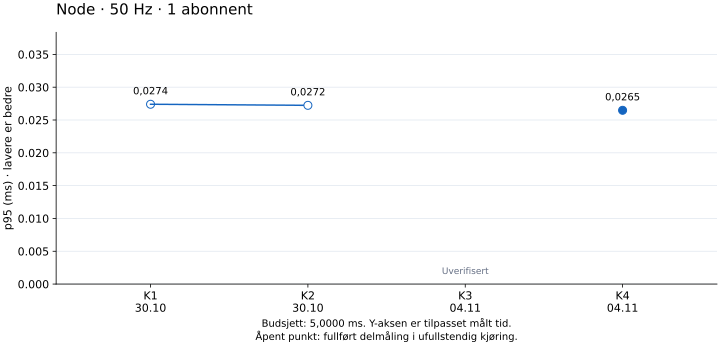
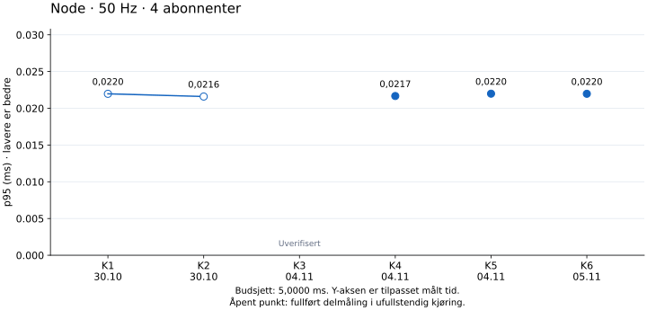
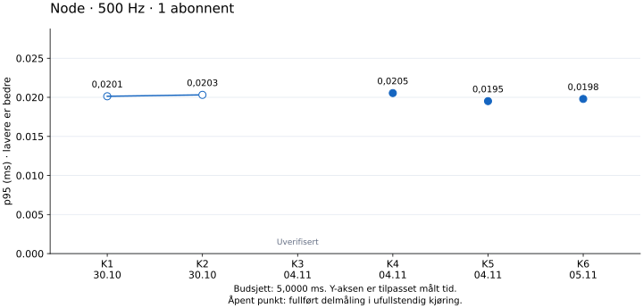
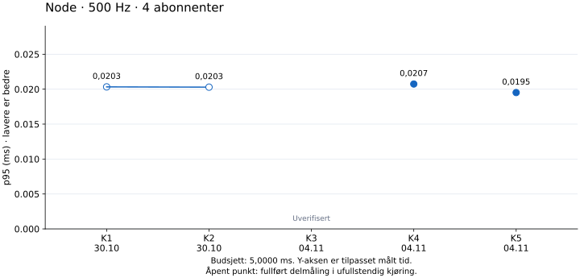
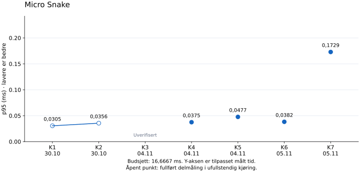
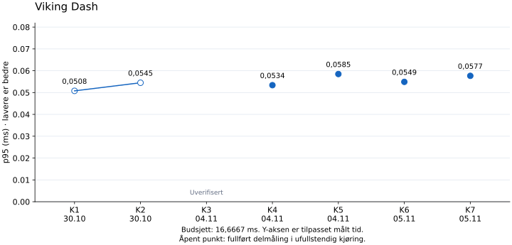
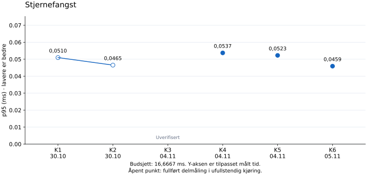
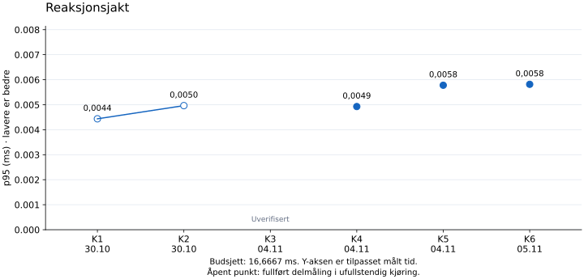
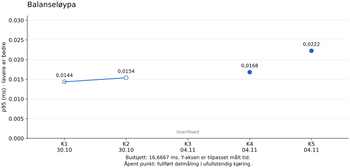
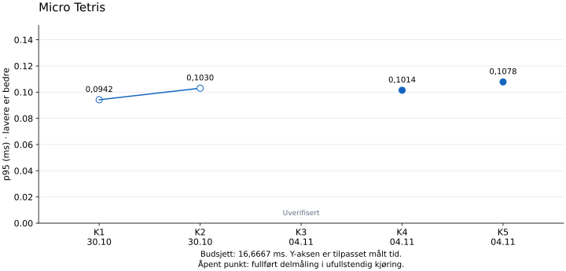
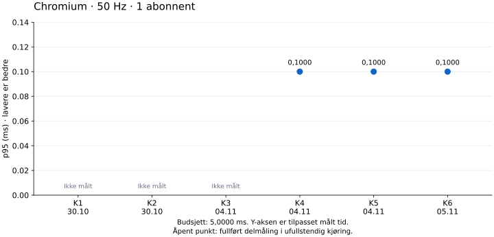
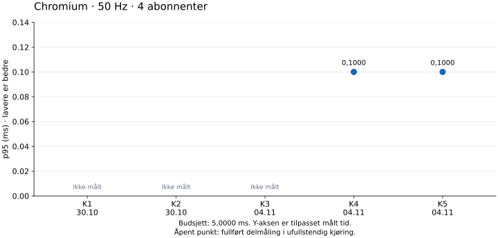
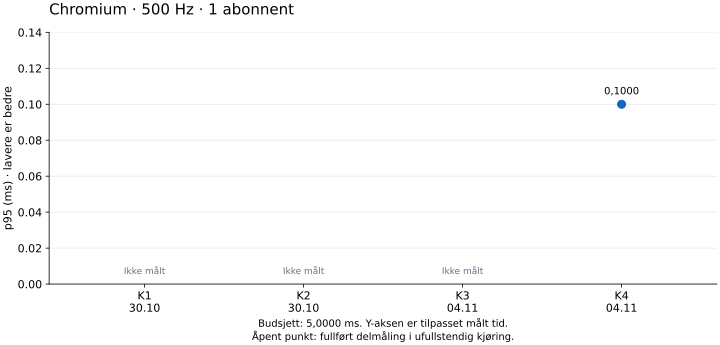
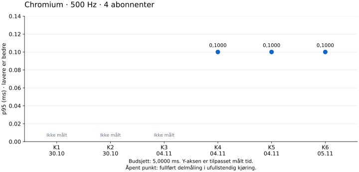
| Profil | Budsjett ms | Arkivbaseline p95 ms | K1 p95 ms | K2 p95 ms | K3 p95 ms | K4 p95 ms | K5 p95 ms | K6 p95 ms | K7 p95 ms |
|---|---|---|---|---|---|---|---|---|---|
| Node · 50 Hz · 1 abonnent | 5,0000 | 0,0237 | 0,0274 * | 0,0272 * | 0,0277 † | 0,0265 | 0,0243 | 0,0276 | 0,0247 |
| Node · 50 Hz · 4 abonnenter | 5,0000 | 0,0249 | 0,0220 * | 0,0216 * | 0,0217 † | 0,0217 | 0,0220 | 0,0220 | 0,0218 |
| Node · 500 Hz · 1 abonnent | 5,0000 | 0,0229 | 0,0201 * | 0,0203 * | 0,0194 † | 0,0205 | 0,0195 | 0,0198 | 0,0196 |
| Node · 500 Hz · 4 abonnenter | 5,0000 | 0,0225 | 0,0203 * | 0,0203 * | 0,0195 † | 0,0207 | 0,0195 | 0,0197 | 0,0198 |
| Micro Snake | 16,6667 | 0,0728 | 0,0305 * | 0,0356 * | 0,0374 † | 0,0375 | 0,0477 | 0,0382 | 0,1729 |
| Viking Dash | 16,6667 | 0,0442 | 0,0508 * | 0,0545 * | 0,0539 † | 0,0534 | 0,0585 | 0,0549 | 0,0577 |
| Stjernefangst | 16,6667 | 0,0173 | 0,0510 * | 0,0465 * | 0,0504 † | 0,0537 | 0,0523 | 0,0459 | 0,0348 |
| Reaksjonsjakt | 16,6667 | 0,0031 | 0,0044 * | 0,0050 * | 0,0050 † | 0,0049 | 0,0058 | 0,0058 | 0,0060 |
| Balanseløypa | 16,6667 | 0,0097 | 0,0144 * | 0,0154 * | 0,0154 † | 0,0168 | 0,0222 | 0,0162 | 0,0236 |
| Micro Tetris | 16,6667 | 0,1035 | 0,0942 * | 0,1030 * | 0,1054 † | 0,1014 | 0,1078 | 0,1069 | 0,1032 |
| Chromium · 50 Hz · 1 abonnent | 5,0000 | 0,1000 | — | — | — | 0,1000 | 0,1000 | 0,1000 | 0,1000 |
| Chromium · 50 Hz · 4 abonnenter | 5,0000 | 0,1000 | — | — | — | 0,1000 | 0,1000 | 0,1000 | 0,1000 |
| Chromium · 500 Hz · 1 abonnent | 5,0000 | 0,1000 | — | — | — | 0,1000 | 0,1000 | 0,1000 | 0,1000 |
| Chromium · 500 Hz · 4 abonnenter | 5,0000 | 0,1000 | — | — | — | 0,1000 | 0,1000 | 0,1000 | 0,1000 |
* Fullført delmåling, men samlet kjøring er ufullstendig. † Uverifisert; egenkontroll eller delmåling manglet/bestod ikke. — Ikke målt.
Spillbenchmarken dekker de lagrede spillprofilene i tabellen. Micro Racer har foreløpig ingen CPU-benchmarkprofil.
Kolonnen «Arkivbaseline» er fra det tidligere målesammendraget på en annen PC. Den er en referanse, ikke et punkt i disse grafene eller bevis for en ytelsesforbedring.
2026-11-05: versjon d54d0123 er publisert. Dette er avgrensede kontroller før og etter utrulling, ikke en ny full evaluering. FoM-grafen endres først etter ny evaluering og brukervurdering.
| Kontroll | Resultat | Forklaring |
|---|---|---|
| Enhetstester / input | 223/223 bestått | 102 webapp, 45 inputbibliotek og 76 backend. |
| Nettleser | 62/62 app; 10/10 input | Tetris-styring, canvas, lyd, tilkobling og øvrige brukerforløp. |
| SDK og spillisolasjon | 13/13 bestått | Separat kontroll; ingen ekstra FoM-poeng. |
| Spillkatalog | 47 varianter bevart og synkronisert | Samme ID-er og poengregler; nye innholdshasher kontrollert i API-et. |
| Publisert nettside | 120 filer; 7 spill; 47 topplister | SHA-256, HTTPS, mobilvisning, bilder og seks tjenester kontrollert. |
Ingen produktavvik påvist. Første offentlige nettleserprobe leste bildestatus før innlasting; kontroll med eksplisitt venting bestod. Første feil og oppfølging er dokumentert.
Fysisk USB, ekte Qwen og lang backendprofil ble ikke kjørt på nytt. Komplett lokal appevaluering 20261105T192832.581524Z har FoM 100,00 med Martins nye brukerskår 10/10; den vises separat i historikken.
K betyr kjøring, ikke forbedringsrunde. Flere kjøringer kan tilhøre samme kodeversjon. En serie har samme testgrunnlag, profil, miljø og skårformel. Den eldre backend-FoM-en bruker en annen formel og inngår ikke i appens utviklingskurve.
| Kjøring (UTC) | Opprinnelig navn / detaljrapport | Commit | Serie | Status |
|---|---|---|---|---|
| K1 · 2026-10-30 13:41 UTC | 02 test fførste iterasjon | 0658e3e2 | dd4fe64446c1 | Ufullstendig kjøring |
| K2 · 2026-10-30 13:45 UTC | funker ikke | 0658e3e2 | dd4fe64446c1 | Ufullstendig kjøring |
| K3 · 2026-11-04 08:39 UTC | 2026-11-04 – Micro Racer etter evalueringsrettelse | f77aedea | f9491acd0594 | Måleverktøyets egenkontroll feilet / mangler |
| K4 · 2026-11-04 08:40 UTC | 2026-11-04 – Micro Racer med rettet evalueringsverktøy | f77aedea | a8a78ef6f9ea | Komplett måling |
| K5 · 2026-11-04 19:00 UTC | 02 – spillisolasjon og SDK | b48b42ed | 7b4225da7b54 | Komplett måling |
| K6 · 2026-11-05 11:39 UTC | 03 – kontrollert tidspunkt i Viking-lydtesten | f6730683 | 754257955077 | Komplett måling |
| K7 · 2026-11-05 19:28 UTC | 04 – Tetris-styring, spillflate og tilkobling | d54d0123 | 216cc22a506d | Komplett måling |
| # | Iterasjon | Profil / serie / vekter | F / 100 | P / 100 | U / 100 | Teknisk | FoM | Status, feil og kommentar |
|---|---|---|---|---|---|---|---|---|
| 1 | 02 test fførste iterasjon 2026-10-30T13:41:57.880693+00:00 | local-browserdd4fe64446c1Vekter F/P/U: 50 % / 30 % / 20 % | 100.00 | 100.00 | — | — | — | BLOCKED 0 FAIL · 1 BLOCKED · Selvtest: PASS Venter på UX |
| 2 | funker ikke 2026-10-30T13:45:04.832725+00:00 | local-browserdd4fe64446c1Vekter F/P/U: 50 % / 30 % / 20 % | 100.00 | 100.00 | 50.00 | — | — | BLOCKED 0 FAIL · 2 BLOCKED · Selvtest: PASS Forrige versjon vurderes til 5/10. Den nye nettsiden er visuelt mye finere enn denne versjonen. |
| 3 | 2026-11-04 – Micro Racer etter evalueringsrettelse 2026-11-04T08:39:02.598624+00:00 | local-browserf9491acd0594Vekter F/P/U: 50 % / 30 % / 20 % | 100.00 | 100.00 | — | — | — | BLOCKED 0 FAIL · 1 BLOCKED · Selvtest: FAIL Venter på UX |
| 4 | 2026-11-04 – Micro Racer med rettet evalueringsverktøy 2026-11-04T08:40:43.469866+00:00 | local-browsera8a78ef6f9eaVekter F/P/U: 50 % / 30 % / 20 % | 99.73 | 100.00 | 80.00 | 99.83 | 95.86 | COMPLETE 1 FAIL · 0 BLOCKED · Selvtest: PASS Nettsiden er visuelt mye finere nå. |
| 5 | 02 – spillisolasjon og SDK 2026-11-04T19:00:15.800529+00:00 | local-browser7b4225da7b54Vekter F/P/U: 50 % / 30 % / 20 % | 99.73 | 100.00 | 90.00 | 99.83 | 97.86 | COMPLETE 1 FAIL · 0 BLOCKED · Selvtest: PASS Nå er alt nesten helt bra, funksjonalitet virker som planlagt |
| 6 | 03 – kontrollert tidspunkt i Viking-lydtesten 2026-11-05T11:39:06.749273+00:00 | local-browser754257955077Vekter F/P/U: 50 % / 30 % / 20 % | 100.00 | 100.00 | 90.00 | 100.00 | 98.00 | COMPLETE 0 FAIL · 0 BLOCKED · Selvtest: PASS Nå er alt nesten helt bra, funksjonalitet virker som planlagt |
| 7 | 04 – Tetris-styring, spillflate og tilkobling 2026-11-05T19:28:32.754704+00:00 | local-browser216cc22a506dVekter F/P/U: 50 % / 30 % / 20 % | 100.00 | 100.00 | 100.00 | 100.00 | 100.00 | COMPLETE 0 FAIL · 0 BLOCKED · Selvtest: PASS vi er fornøyde nå |